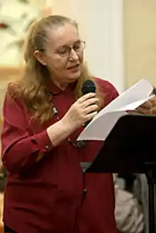
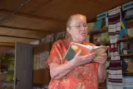

Софія Майданська народилася 7 вересня 1948 року в м. Азанка Свердловської області, де перебувала на засланні її мама. Середню освіту здобула в Чернівцях (закінчила Садгірську школу №38). В одному інтерв’ю Софія Василівна так згадувала про свої дитячі роки: "Мій дідусь та вся родина з діда-прадіда мешкали у Садгорі, в районі Рогізна. За часів Румунії дідусь був інспектором українських шкіл у буковинських селах. У Садгорі біля залізниці, де нафтобаза, дідусь купив ділянку землі, звів будинок. Родина переїхала у недобудовану хату, але коли почалася війна, була змушена її покинути. Мою маму репресували у табори Сибіру. Жила я з бабусею і дідусем. Перший клас закінчила у румунській школі в Остриці. Після війни дідусь збудував іншу хату... Коли переїхали, мені було вісім років. Люди називали ту місцевість, де ми жили, Баранівкою. Потім виявилося, що то Барунівка. На вулиці Учительській, колишній Чкалова, барон колись поселяв своїх майстрів. Ця вулиця була забудована однаковими будиночками. За моєї пам’яті там жили поляки, цигани, євреї і навіть нащадки людей, які колись працювали у барона. Із так званими "баронськими" дітьми я ходила разом до школи № 38".
Після здобуття спеціальної освіти (також в м. Чернівці) вступила в Львівську консерваторію, яку закінчила в 1973 році. З цього ж року розпочинається її трудова діяльність: перша професія – педагог. Працювала викладачем в Кам'янець-Подільському педінституті (скрипка) та Київському інституті культури. Пізніше закінчує Вищі літературні курси в Москві при Літературному інституті ім. М.Горького. Вже в 1977 році виходить перша збірка віршів "Мій добрий світ". Далі: "Долоні континентів" (1979), "Похвала землі" (1981), "Терези" (1986), "Повноліття надій" (1988), "Освідчення" (1990), "Ввійди і ти у цей собор" (вибране, 1993), "Зійшло мені сонце печалі" (вибране, 2007).
Талант Софії Майданської багатогранний, оскільки, крім віршів, вона є авторкою повістей і романів, найвідоміші серед них – "Про дівчинку, яка малювала на піску", "По той бік студеного плину", "Провідна неділя", "Землетрус", "Діти Ніоби", "In te speravi". З 1979 року член Спілки письменників України. Лауреат літературних премій "Благовіст" (1997) та ім. Олеся Гончара (1998 р. за роман "Діти Ніоби"), нагороди ім. Лесі та Петра Ковалевих (1997, США). Заслужений діяч мистецтв України(2004 р.) Вірші С. Майданської перекладено англійською, білоруською, болгарською, латиською, литовською, польською, португальською, російською, румунською, шведською мовами. Вона є автором численних сценаріїв, лібрето, постановницею літературно-музичних вистав. Тільки впродовж останніх років вийшли її книжки: "Зійшло мені сонце печалі: поезії" (2007), "Провідна неділя" (2007), "Сподіваюся на Тебе" (2008) (видавництво "Факт"). Часто відвідує Буковину та Чернівці. Нині живе й працює в Києві.